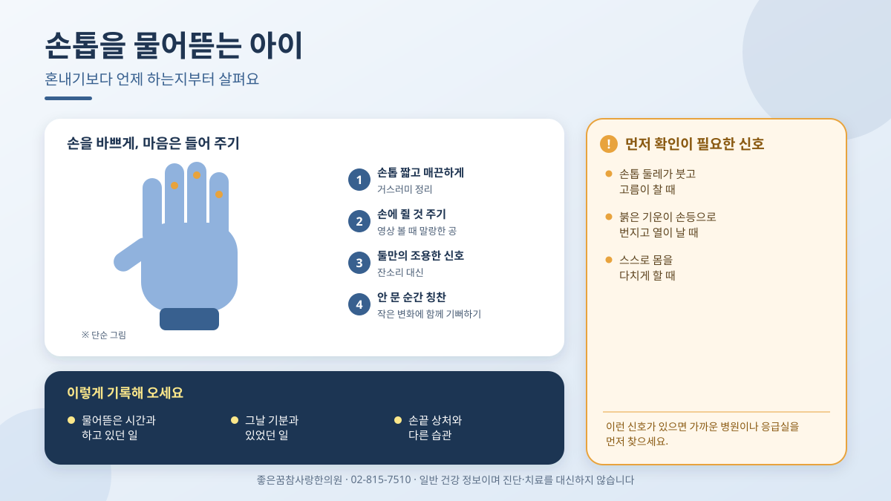

이종호 한의사 감수좋은꿈참사랑한의원 대표원장 (한의사 면허번호 19769)발행 2026-11-26 · 수정 2026-11-26
이 글의 차례
저녁 식탁에서 아이가 숟가락을 내려놓더니 슬그머니 손가락을 입으로 가져갑니다. 앞니로 손톱 끝을 톡톡 뜯고, 이제는 손톱 둘레 살까지 일어나 있습니다. "또 물어뜯네!" 하고 손을 내리게 하면 잠깐 멈췄다가, 텔레비전을 보는 사이 어느새 다시 손이 입에 가 있습니다.
진료실에서 아이 진료를 하다 보면 손끝이 짧게 뜯겨 있는 경우를 자주 봅니다. 부모님께 여쭤 보면 "여러 번 말해도 안 고쳐져요" 하며 한숨을 쉬십니다. 쓴맛 나는 매니큐어를 발라 봤다는 분, 손톱을 숨기려고 반창고를 붙여 봤다는 분도 계십니다.
손톱을 물어뜯는 습관은 생각보다 많은 아이와 청소년에게 보입니다. 대부분은 아이가 자라면서 줄어들지만, 그 사이 부모와 아이 사이에 잔소리와 다툼이 쌓이기 쉽습니다. 이 글에서는 이 습관을 조금 다르게 바라보는 방법과, 집에서 해 볼 수 있는 일을 정리해 보겠습니다.
손톱 물어뜯기는 어떤 습관인가요
손톱을 물어뜯는 것은 손을 입으로 가져가는 여러 습관 가운데 하나입니다. 손가락 빨기, 입술 깨물기, 손톱 둘레 살 뜯기, 머리카락 만지기 같은 행동과 비슷한 자리에 있습니다. 많은 경우 아이 스스로는 하고 있다는 것을 잘 의식하지 못합니다.
이 습관은 아이가 무언가에 몰두하거나, 지루하거나, 긴장할 때 주로 나타납니다. 텔레비전이나 영상을 볼 때, 숙제를 할 때, 차를 타고 이동할 때, 혼나거나 낯선 자리에 있을 때가 대표적입니다. 손이 할 일이 없는 순간에 입으로 향하는 것입니다.
대부분의 아이는 자라면서 이 습관이 줄어듭니다. 다만 손끝에 상처가 자주 나거나, 손톱 모양이 변하거나, 아이 스스로 손을 숨기고 부끄러워한다면 조금 더 적극적으로 도와줄 필요가 있습니다.
왜 아이는 손톱을 물어뜯을까요
첫째, 마음을 가라앉히는 방법으로 쓰이는 경우입니다. 긴장하거나 불안할 때 손톱을 물면 그 반복된 감각이 잠깐 마음을 달래 줍니다. 아이에게는 스스로 찾은 작은 진정 방법인 셈입니다. 새 학기, 이사, 동생이 생겼을 때처럼 변화가 많은 시기에 더 심해지기도 합니다.
둘째, 지루함입니다. 손과 입이 할 일이 없을 때 자연스럽게 손이 입으로 갑니다. 이 경우에는 아이가 특별히 불안해 보이지 않는데도 영상을 보거나 수업을 듣는 동안 습관적으로 손톱을 뭅니다.
셋째, 손끝의 거슬림입니다. 손톱이 길거나 끝이 울퉁불퉁하고, 손톱 둘레에 거스러미가 있으면 아이는 그것을 정리하려고 입을 씁니다. 겨울철 손이 건조해 거스러미가 잘 생기는 시기에 습관이 더 잦아지기도 합니다.
넷째, 따라 하기와 피로입니다. 가족 가운데 같은 습관이 있는 분이 있으면 아이도 보고 배우기 쉽습니다. 잠이 부족하거나 하루가 빡빡해 지친 날에도 이런 습관이 늘어납니다.
한의학에서는 이런 반복 행동을 마음이 조급하고 긴장이 쉽게 쌓이는 경향과 함께 살펴 왔습니다. 이것은 아이의 성향을 이해하는 오래된 관찰이지 병명은 아닙니다. 진찰에서는 아이의 잠, 식사, 하루 리듬과 함께 참고합니다.
다른 습관과는 어떻게 다를까요
손톱 물어뜯기는 아이가 비교적 조용히, 그리고 자기도 모르게 하는 습관입니다. 이와 달리 눈 깜빡임, 킁킁거림, 어깨 들썩임처럼 갑자기 빠르게 반복되는 움직임은 틱일 수 있습니다. 두 가지가 함께 보이는 아이도 있으니, 어떤 모습이 언제 나타나는지 기록해 두시면 구분에 도움이 됩니다.
손톱만이 아니라 손톱 둘레 살을 피가 날 만큼 뜯거나, 머리카락을 뽑거나, 피부를 계속 긁어 상처를 만드는 행동이 함께 있다면 습관을 넘어서 아이가 스스로 멈추기 어려운 상태일 수 있습니다. 이럴 때는 소아청소년 정신건강의학과 상담을 함께 받아 보시길 권합니다.
먼저 이렇게 여쭙니다
아이가 손톱을 물어뜯는다고 하시면 저는 혼내는 방법보다 언제, 어디서, 어떤 기분일 때 하는지부터 여쭙니다.
- 손톱을 물어뜯기 시작한 것은 언제부터인가요?
- 주로 어떤 상황에서 하나요? 영상, 숙제, 차 안, 잠들기 전 등
- 요즘 새 학기, 이사, 가족 변화처럼 마음이 쓰이는 일이 있었나요?
- 잠은 몇 시에 자고, 깊이 자는 편인가요?
- 손가락 빨기, 입술 깨물기, 눈 깜빡임 같은 다른 습관이 있나요?
- 손톱 둘레가 붓거나 곪은 적이 있나요?
- 가족 가운데 비슷한 습관이 있는 분이 있나요?
아이에게도 직접 물어봅니다. "언제 손이 입에 가는 것 같아?" 하고 물으면 의외로 "심심할 때요", "시험 보기 전에요" 하고 정확하게 대답하는 아이가 많습니다. 아이 스스로 알아차리는 것이 변화의 첫걸음이 됩니다.
일상에서 먼저 해 볼 수 있는 것
습관은 혼내서 줄어들기보다, 다른 행동으로 자리를 바꿔 줄 때 줄어드는 경우가 많습니다. 아래 방법 가운데 아이와 함께 몇 가지를 골라 보세요.
- 손톱을 짧고 매끈하게 다듬고 거스러미는 손톱깎이로 정리하기
- 손이 건조하지 않도록 핸드크림 바르는 습관 들이기
- 영상을 볼 때 손에 쥘 수 있는 말랑한 공이나 장난감 주기
- 손톱을 물려 할 때 쓰는 우리 집만의 신호 정하기
- 손톱을 물지 않은 날을 달력에 스티커로 표시하기
- 잠들기 전 하루 이야기를 나누는 시간 만들기
신호는 혼내는 말 대신 쓰는 것이 좋습니다. "손!" 하고 외치기보다 부모가 자기 귀를 살짝 만지는 것처럼 둘만 아는 조용한 신호를 정해 두면, 아이는 창피함 없이 손을 내릴 수 있습니다.
쓴맛 나는 매니큐어는 아이가 스스로 원할 때 도움이 되기도 합니다. 하지만 아이 의사와 상관없이 벌처럼 쓰면 오히려 반발만 커질 수 있습니다. 아이와 의논해서 함께 정해 보세요.
손이 심심할 틈을 줄여 주세요
손톱을 물어뜯는 순간은 대개 손이 비어 있을 때입니다. 영상을 보는 시간에는 색칠, 클레이, 실뜨기처럼 손을 쓰는 놀이를 곁에 두고, 차를 타고 이동할 때는 작은 퍼즐이나 손가락 인형을 챙겨 보세요. 손이 바쁘면 입으로 갈 틈이 줄어듭니다. 아이가 좋아하는 놀이를 직접 고르게 하면 더 즐겁게 손을 씁니다.
몸을 충분히 움직이는 것도 도움이 됩니다. 하루 종일 앉아 있던 아이는 남은 긴장을 손끝으로 풀기 쉽습니다. 놀이터에서 매달리기나 공놀이처럼 손과 팔을 크게 쓰는 놀이를 하면, 저녁 시간의 손톱 습관이 덜해지는 아이도 있습니다.
혼내지 않고 함께하는 법
손톱을 물어뜯는 아이를 볼 때마다 부모 마음은 조급해집니다. 그러나 "하지 마", "또 그러네" 하는 말이 하루에 여러 번 반복되면, 아이는 손톱보다 부모 눈치를 더 신경 쓰게 됩니다. 그리고 숨어서 손톱을 물게 됩니다.
대신 아이가 손톱을 물지 않은 순간을 찾아 칭찬해 주세요. "오늘 숙제할 때 손이 공을 쥐고 있었네" 같은 구체적인 말이 아이에게 오래 남습니다. 습관을 바꾸는 일은 몇 주에서 몇 달이 걸리기도 하니, 작은 변화에 함께 기뻐해 주시면 됩니다.
아이의 손톱이 짧게 뜯겨 있다는 것은 어쩌면 아이 마음에 작은 긴장이 쌓여 있다는 신호일 수 있습니다. 습관 자체를 고치는 것만큼, 요즘 아이 하루가 어떤지 들어 주는 시간이 중요합니다.
자라는 시기마다 모습이 조금씩 다릅니다
어린 아이는 손가락을 빨던 습관이 손톱 물기로 옮겨 가는 경우가 많습니다. 이 시기에는 아이가 스스로 멈추겠다는 마음을 내기 어려우니, 손톱을 짧게 다듬어 주고 손으로 하는 놀이를 늘려 주는 쪽이 현실적입니다.
초등학생이 되면 수업과 숙제, 친구 관계처럼 신경 쓸 일이 늘면서 습관이 다시 잦아지기도 합니다. 이때부터는 아이와 함께 목표를 정할 수 있습니다. "이번 주는 엄지손톱만 지켜 보자"처럼 작은 목표가 아이에게 성공의 경험을 줍니다.
청소년이 되면 손끝을 남에게 보이는 것이 부끄러워 혼자 고민하는 경우가 많습니다. 이 시기에는 부모가 나서서 지적하기보다 아이가 도움을 원할 때 함께 방법을 찾아 주겠다는 뜻만 전해 두는 편이 좋습니다. 스스로 정한 방법일수록 오래갑니다.
가족이 함께하면 덜 외롭습니다
습관을 바꾸는 일은 아이 혼자 하기보다 가족이 함께할 때 수월해집니다. 부모님 가운데 손톱을 물거나 다리를 떠는 습관이 있다면, 아이와 함께 각자 바꾸고 싶은 습관을 하나씩 정해 보세요. "아빠도 같이 해 볼게"라는 말은 아이에게 큰 응원이 됩니다.
형제자매가 있다면 놀리거나 고자질하지 않도록 미리 이야기해 두는 것도 필요합니다. 습관을 들킨 아이는 창피함 때문에 더 위축될 수 있습니다. 가족 모두가 같은 신호를 쓰고, 칭찬할 일이 생기면 함께 박수를 쳐 주는 집안 분위기가 아이에게는 가장 든든한 힘이 됩니다.
저녁 식사 뒤 가족이 함께 손을 씻고 핸드크림을 바르는 시간을 만드는 집도 있습니다. 손을 돌보는 일을 가족의 작은 의식으로 만들면, 아이도 자기 손을 아끼는 마음을 자연스럽게 배워 갑니다.
손끝 상처는 이렇게 돌봐 주세요
손톱을 물어뜯는 아이는 손톱 둘레에 작은 상처가 자주 생깁니다. 상처가 있을 때는 깨끗한 물로 씻고 물기를 말린 뒤 보습해 주세요. 상처를 손으로 자꾸 만지거나 입에 넣으면 세균이 들어가기 쉽습니다.
손톱 둘레가 붉게 붓고 욱신거리거나 고름이 보이면 손거스러미 염증일 수 있습니다. 이럴 때는 집에서 짜거나 뜯지 말고 소아청소년과나 피부과에서 진료를 받으세요. 손톱을 오래 물어뜯으면 손톱 모양이 울퉁불퉁해지기도 하는데, 습관이 줄면 새로 자라는 손톱은 대개 매끈해집니다.
입으로 손을 자주 가져가는 습관은 감기나 장염 같은 감염과도 연결됩니다. 밖에서 돌아오면 손을 씻는 습관을 함께 들이시면 손끝 상처와 감염을 함께 줄이는 데 보탬이 됩니다.
한의원에서 함께 살필 수 있는 경우
- 손톱 물어뜯기와 함께 잠들기 어려워하고 자주 깨는 아이
- 긴장하면 배가 아프거나 손에 땀이 나는 예민한 아이
- 새 학기나 시험처럼 변화가 있을 때 습관이 부쩍 느는 아이
- 쉽게 짜증을 내고 몸이 늘 긴장된 듯 보이는 아이
좋은꿈참사랑한의원에서는 아이를 진찰하며 손끝 상태와 함께 잠, 식사, 배변, 마음의 긴장 정도를 살핍니다. 습관만 따로 떼어 보기보다 아이의 하루 전체에서 긴장이 어디에 쌓이는지를 찾아보려 합니다.
진찰한 내용을 바탕으로 잠자리 순서와 손을 바쁘게 하는 방법처럼 생활에서 바꿔 볼 것을 먼저 함께 정합니다. 아이 상태에 따라 침이나 한약 상담이 필요한지는 진찰 뒤 판단하며, 한약은 아이가 먹고 있는 약과 영양제를 모두 확인한 뒤 신중히 정합니다. 손톱 습관이 금방 사라진다고 약속드리지는 않습니다. 아이 속도에 맞춰 함께 가는 것을 목표로 합니다.
이렇게 기록해 오시면 상담이 쉬워집니다
습관은 기록해 보면 규칙이 보입니다. 일주일 정도 아이와 함께 간단히 적어 보세요.
- 손톱을 물어뜯은 시간과 그때 하고 있던 일
- 그날 아이의 기분이나 있었던 일
- 잠든 시각과 일어난 시각
- 손톱을 물지 않은 날과 그날 달랐던 점
- 손끝에 상처가 생긴 날과 모습
- 함께 보이는 다른 습관
아이와 함께 쓰는 기록이면 더 좋습니다. "오늘은 언제 손이 입에 갔던 것 같아?" 하는 대화 자체가 아이가 스스로 알아차리는 연습이 됩니다.
손을 탓하기보다 마음을 들어 주세요
손톱 물어뜯기는 아이가 나쁜 버릇을 가진 것이 아니라, 아직 자기 마음을 다루는 다른 방법을 다 배우지 못했다는 뜻일 수 있습니다. 부모가 그 자리를 함께 채워 주면 습관은 서서히 자리를 내줍니다.
이번 주에는 잔소리 대신 둘만의 조용한 신호 하나를 정해 보세요. 그리고 손톱을 물지 않은 순간을 찾아 한 번 더 칭찬해 주세요. 아이 손끝이 조금씩 자라나는 것을 함께 지켜보시면 좋겠습니다.
이런 증상은 먼저 확인이 필요합니다
- 손톱 둘레가 붉게 붓고 고름이 차며, 붉은 기운이 손가락이나 손등으로 번지고 열이 나는 경우
- 아이가 스스로 몸을 다치게 하거나 죽고 싶다는 말을 하는 경우
이런 신호가 있으면 한의원보다 가까운 병원이나 응급실을 먼저 찾으세요.
함께 읽으면 좋은 글
- 아이가 눈을 자꾸 깜빡이거나 킁킁거리는 틱이 보일 때 부모는 무엇을 살피나요?
- 아이가 아침마다 배나 머리가 아프다며 학교 가기를 힘들어할 때(등교 거부·불안)는 어떻게 살피나요?
- 아이가 산만하고 집중을 못 해 ADHD가 걱정될 때, 부모는 무엇을 먼저 살피나요?
- 아이가 잠투정이 심하고 자다가 자주 깰 때는 어떤 점을 살펴보나요?
- 아이가 휴대폰을 보다가 밤늦게 잠들 때는 어떻게 바꿔 갈 수 있을까요?

여쭙는 것
- 손톱을 물어뜯기 시작한 것은 언제부터인가요?
- 주로 어떤 상황에서 하나요? 영상, 숙제, 차 안, 잠들기 전 등
- 요즘 새 학기, 이사, 가족 변화처럼 마음이 쓰이는 일이 있었나요?
생활에서 해 볼 것
- 손톱을 짧고 매끈하게 다듬고 거스러미는 손톱깎이로 정리하기
- 손이 건조하지 않도록 핸드크림 바르는 습관 들이기
- 영상을 볼 때 손에 쥘 수 있는 말랑한 공이나 장난감 주기
한의원에서 함께 살필 것
- 손톱 물어뜯기와 함께 잠들기 어려워하고 자주 깨는 아이
- 긴장하면 배가 아프거나 손에 땀이 나는 예민한 아이
- 새 학기나 시험처럼 변화가 있을 때 습관이 부쩍 느는 아이
먼저 확인이 필요한 신호
- 손톱 둘레가 붉게 붓고 고름이 차며, 붉은 기운이 손가락이나 손등으로 번지고 열이…
- 아이가 스스로 몸을 다치게 하거나 죽고 싶다는 말을 하는 경우
한눈에 보는 표
| 구분 | 핵심 |
|---|---|
| 여쭙는 것 | 손톱을 물어뜯기 시작한 것은 언제부터인가요? 주로 어떤 상황에서 하나요? 영상, 숙제, 차 안, 잠들기 전 등 |
| 생활에서 해 볼 것 | 손톱을 짧고 매끈하게 다듬고 거스러미는 손톱깎이로 정리하기 손이 건조하지 않도록 핸드크림 바르는 습관 들이기 |
| 한의원에서 함께 살필 것 | 손톱 물어뜯기와 함께 잠들기 어려워하고 자주 깨는 아이 긴장하면 배가 아프거나 손에 땀이 나는 예민한 아이 |
| 먼저 확인이 필요한 신호 | 손톱 둘레가 붉게 붓고 고름이 차며, 붉은 기운이 손가락이나 손등으로 번지고 열이 나는 경우 아이가 스스로 몸을 다치게 하거나 죽고 싶다는 말을 하는 경우 |
자주 묻는 질문
손톱 물어뜯기는 크면 저절로 없어지나요?
자라면서 줄어드는 아이가 많습니다. 다만 손끝 상처가 잦거나 아이가 부끄러워한다면 지금부터 함께 도와주는 것이 좋습니다.
쓴맛 나는 매니큐어를 발라도 되나요?
아이가 스스로 원할 때는 도움이 되기도 합니다. 벌처럼 쓰기보다 아이와 의논해서 정하시고, 손에 상처가 있을 때는 피해 주세요.
손톱 물어뜯기가 불안 때문인가요?
불안이나 긴장이 관련된 경우도 있지만 지루함이나 손끝의 거슬림 때문인 경우도 많습니다. 언제 주로 하는지 기록해 보시면 아이에게 맞는 방법을 찾기 쉬워집니다.
한의원에서 손톱 습관을 고쳐 주나요?
습관을 바로 없앤다고 약속드리지는 않습니다. 진찰 뒤 잠과 긴장, 생활 리듬을 함께 살피고, 아이와 부모가 집에서 할 수 있는 방법을 함께 정합니다.
손톱을 물어뜯는 아이를 혼내도 되나요?
혼내는 말이 잦아지면 아이가 숨어서 하게 되기 쉽습니다. 둘만 아는 조용한 신호를 정하고, 하지 않은 순간을 찾아 칭찬해 주시길 권합니다.
좋은꿈참사랑한의원은 재진 때 지난번 이야기부터 이어서 여쭙니다. 진료시간과 예약은 오시는 길에서 확인하세요.
어디서 상담받을 수 있나요?
좋은꿈참사랑한의원은 서울 동작구 만양로2길 2 신성빌딩 3층·5층(서울 동작구 상도동, 7호선 상도역 3번 출구 근처)에 있습니다. 한의사 3명(이종호 대표원장, 조영기 수석진료원장, 정원영 진료원장)이 진료합니다. 진료시간은 평일 09:30~20:00(점심 13:00~14:00), 토·일·공휴일 09:30~15:00이며, 방문 전 전화로 확인을 권합니다. 예약은 네이버 예약, 카카오톡 상담, 전화 02-815-7510로 받습니다.
이 글은 일반적인 건강 정보이며 개인의 진단이나 치료를 대신하지 않습니다. 증상이 있거나 복용 중인 약이 있다면 진료를 통해 확인하세요. 치료 효과는 개인마다 다를 수 있습니다.
작성 기준: 일반적으로 알려져 있는 건강 정보를 참고해 정리했습니다(대표원장 감수). 증상 기록은 1~2주 동안 하루 1회, 비슷한 시간에 적어 오시면 지난 상태와 비교하기 쉽습니다.